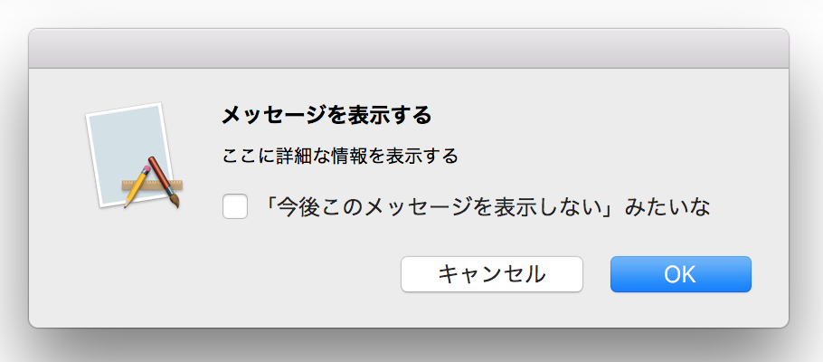
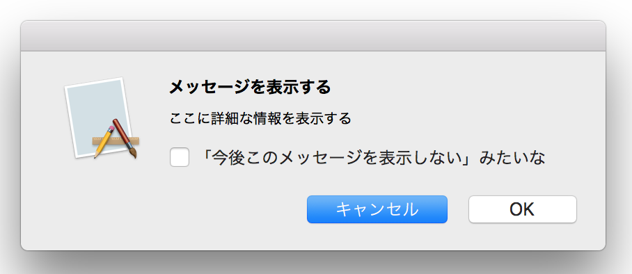
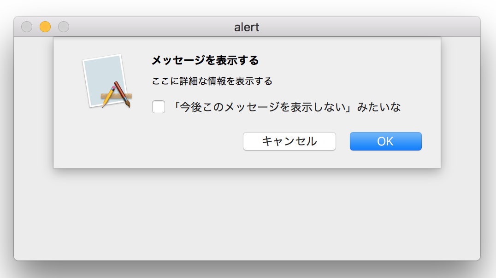
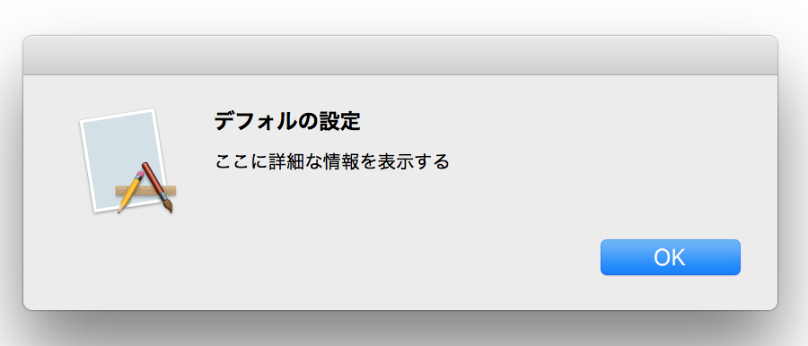
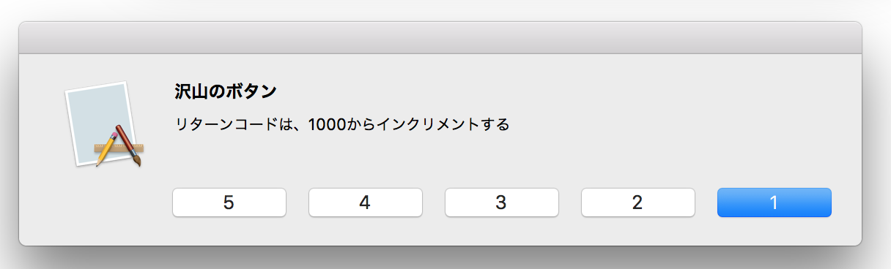

NSAlert ダイアログボックス
OK、キャンセルの二つののボタンと一つのチェックボックスを持つダイアログボックスを表示する。

リターンコードの判定に注意！ OKは、NSModalResponseOK ではない。
キャンセルをデフォルトの "青" ボタンにする。

ダイアログボックスをモーダルシートとして表示する。

NSModalResponse型の定数値
ボタンをクリックしたときのリターンコードの判定で使用する。
デフォルの設定によるダイアログボックスの表示

OKボタンだけが表示される。
4個以上のボタン

リターンコード定数定義から、追加できるボタンは3個までに見えるが、4個以上も可能である。リターンコードは、4番目のボタンが 1003 で、以降 1づつインクリメントしていく。（できるといっても使うべきではない）